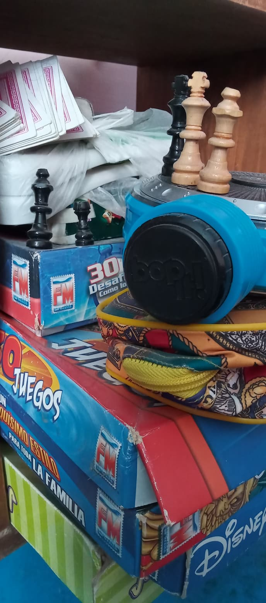
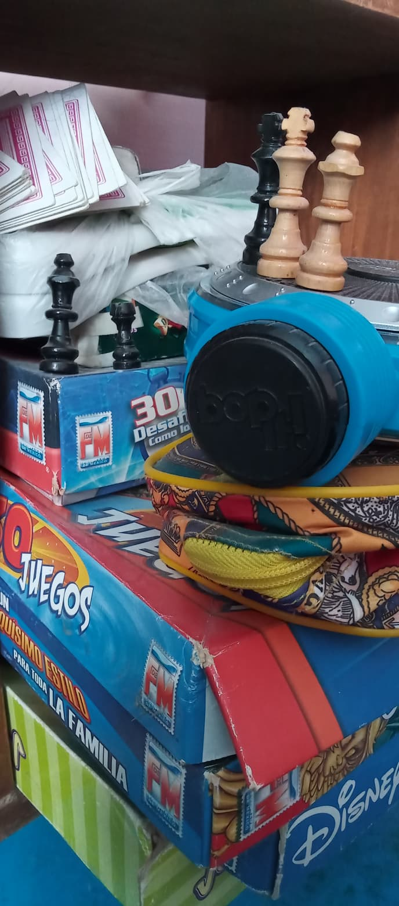

Unos de mis cambios y que puedo sugerir es hacer dinamicas o acciones que te distraigan o te afecten positivamente a tu cuerpo y mente .Yo personalmente prectique la reposteria y algunos pasatimepos los mejore y otros los deje ,unos de ellos que hice fueron ,ciclismo,diujar,pintar,leer,cocina, y algunos juegos de mesa.
 
